Vcall
conversas que chegam direto

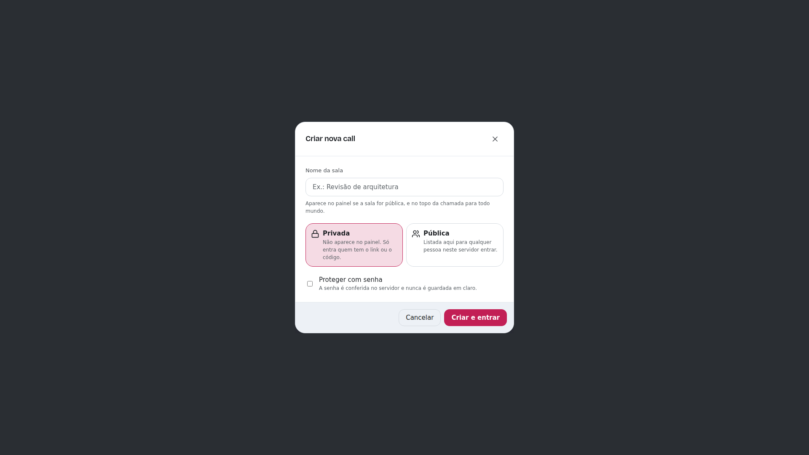
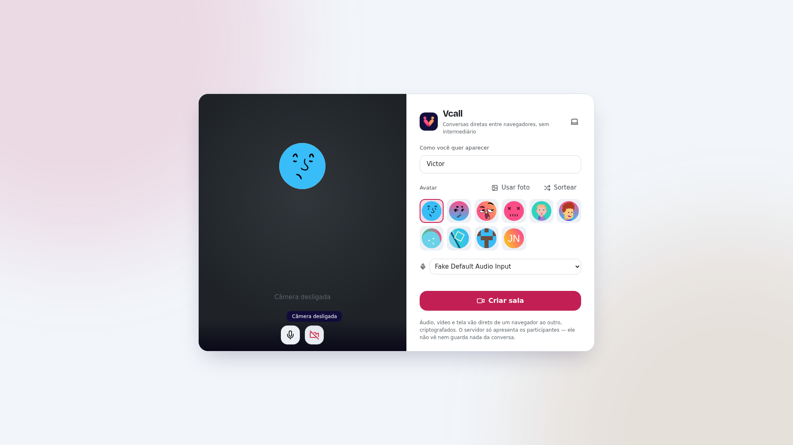
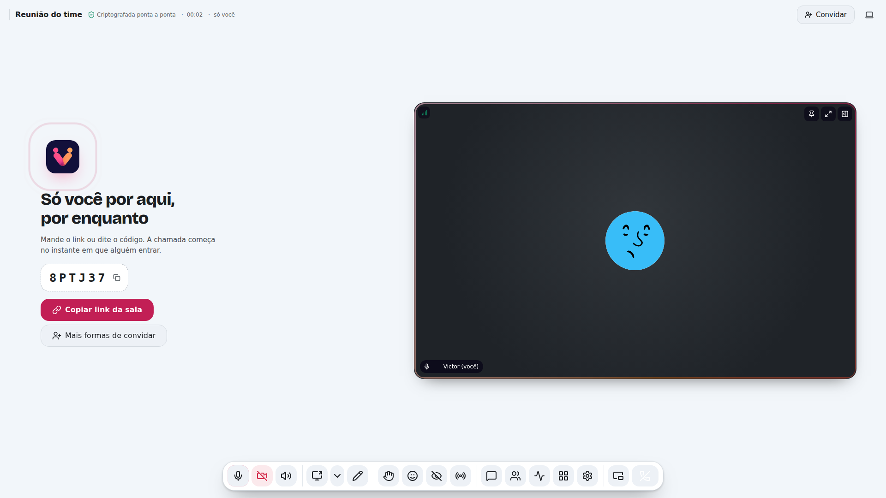
1Criar nova call
2Seu nome
3No ar
Manda o link. Ou dita seis letras.


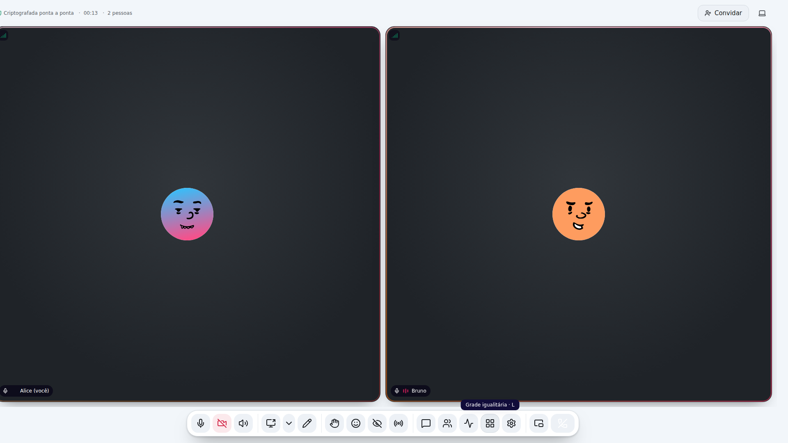
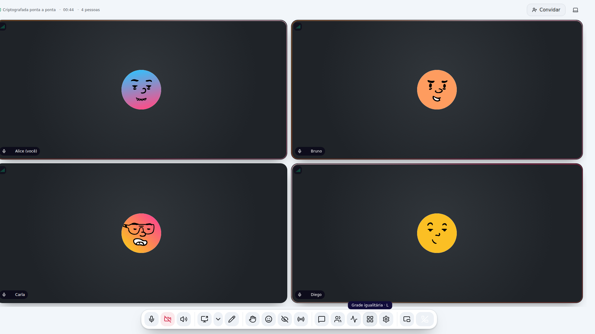
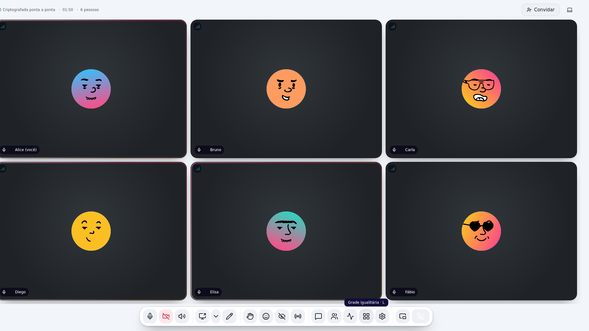
2
pessoas
Até 16 pessoas. Sem conta. Sem instalar.
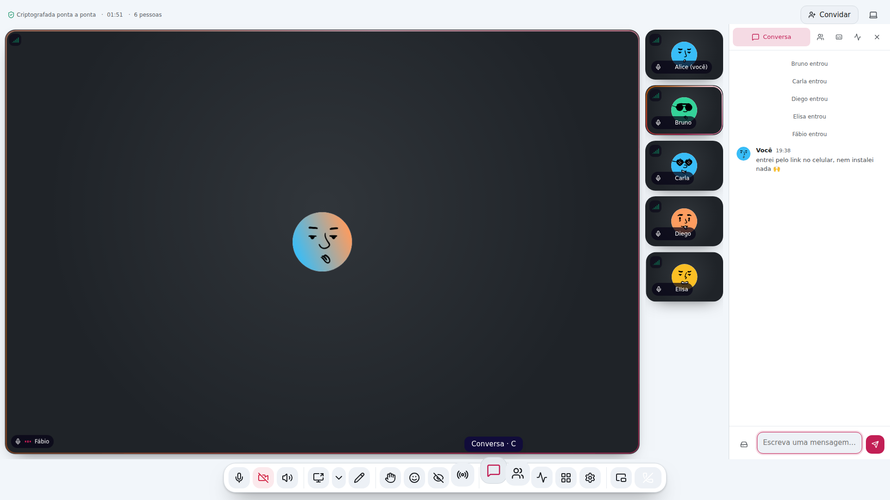
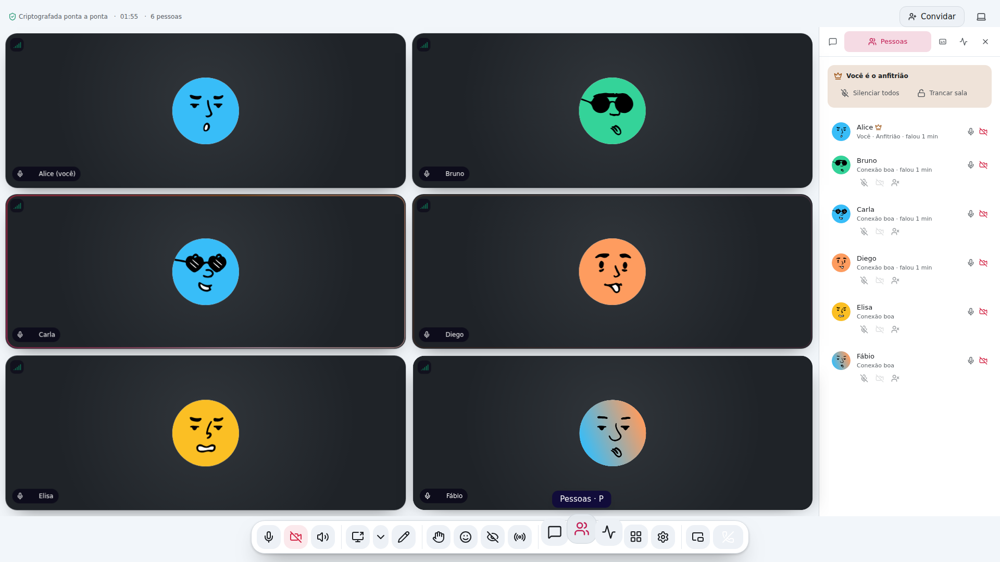
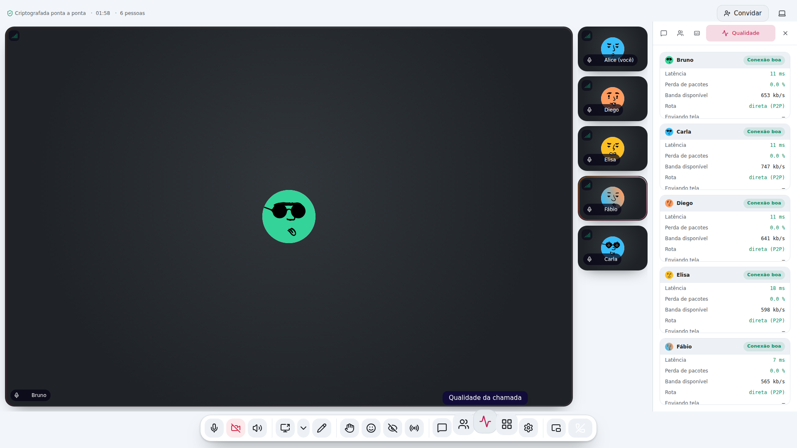
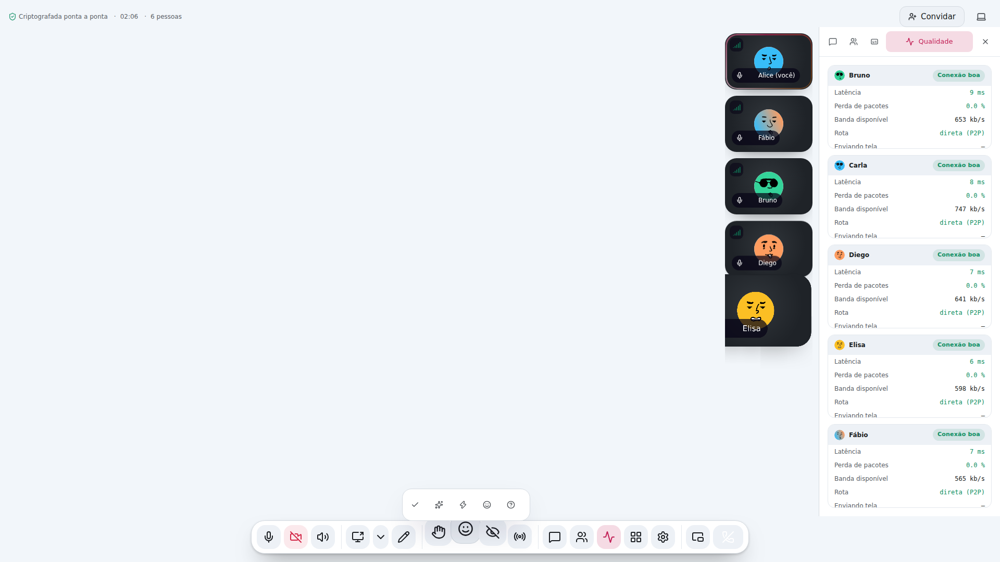
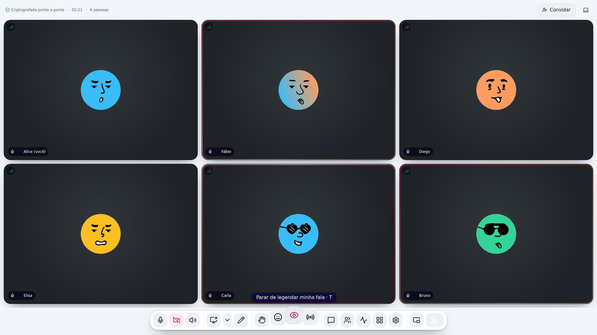
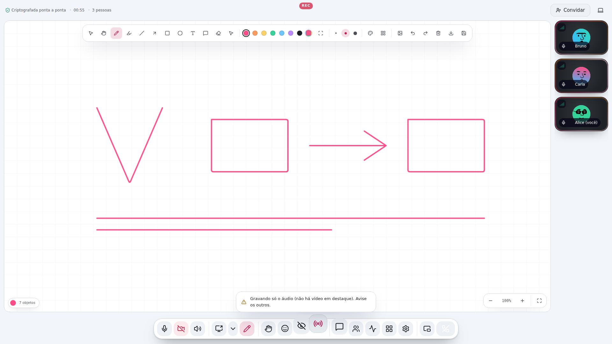
chat·pessoas·rede·reações·legendas·gravação
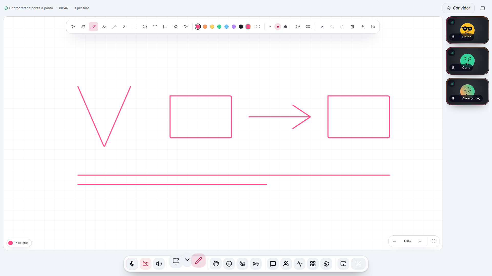
você
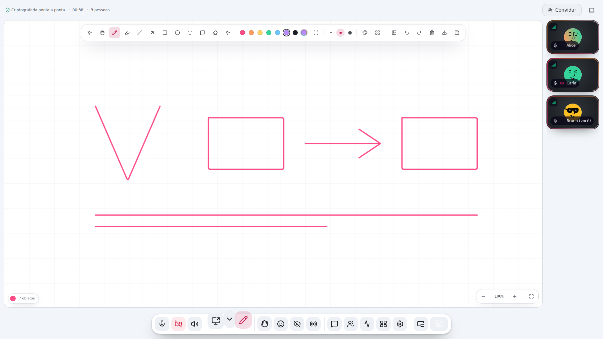
do outro lado
O que você desenha aparece lá na hora.
Nitidez ou fluidez
No celular também.
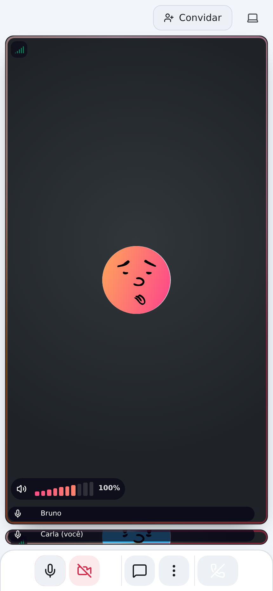
Vcall
Abra o navegador e chame.
criptografada ponta a ponta · sem conta · sem instalar